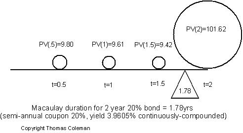
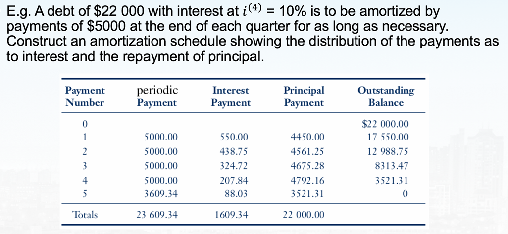
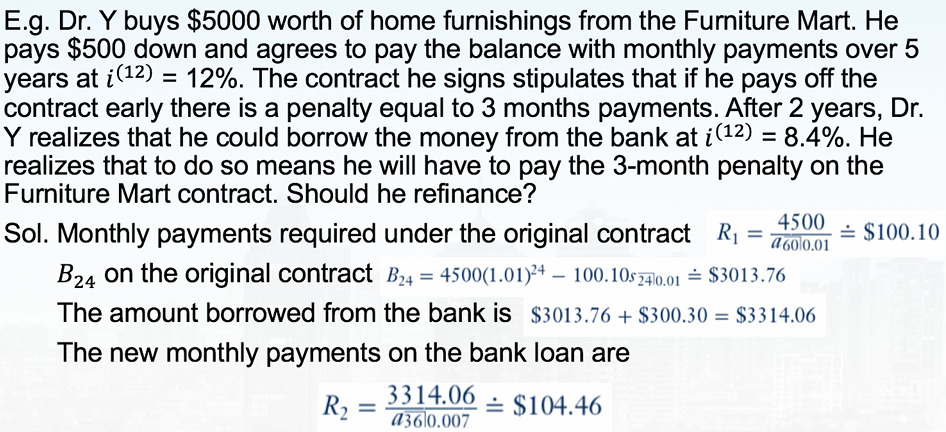
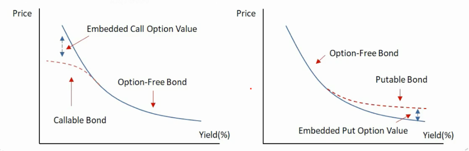

Notes to the basic of Financial Mathematics
The cover is from X: @sog_goog
```table-of-contents
```
Mainly include the time value of money, and my teacher said they were the most basic part. This note is written to strengthen my memories, and I think it's a good chance to practice my shit-like academic English.
Some interesting test you can take after this class:
- IFoA-CM1
- SOA-FM
Concepts
Basic notation
P = principal = original amount borrowed/invested
I = interest = fee or service charge paid to the lender for the use of money
S = future value of P
So we can easily obtain,
$$S-P=I$$
Accumulation/Amount function
Accumulation function $a(t)$ can be regarded as the normalization of amount function $A(t)$.
- $a(t)$ = accumulated value at time $t\ge 0$ of an original investment of **one dollar**
- $a(0)=1$, while $a(t)$ is an increasing and continuous function
- $A(t)$ = accumulated value at time $t\ge 0$ of an original investment of original principles **P**.
- $A(t)=P·a(t)$, where $a(t)$ holds the features above.
Interest
$I_n$ = amount of interest earned in period n
$$I_n=A(n)-A(n-1)$$
$i =$ effective rate of interest, earn during the period.
This "effective" reminds me about "effective potential" in EFT, all of them mean packed some complex contributor in one simplified factor as a midterm procedure.
$i_n =$ effective rate of interest in the $n$th year
$$i_n=\frac{a(n)-a(n-1)}{a(n-1)}$$
Notes: divided by the previous year $a(n-1)$
Simple Interest
no interest earned on any interest that is paid
$$S=P(1+it)$$
This "$it$" seems like an imaginal part...but it isn't, i represents interest and t represents time. $t=1$ represents a whole year.
- The $i_n$ of simple interest $i$:
$$i_n=\frac{i}{1+i(n-1)}$$
Compound Internet
The interest earned at the end of any given period of time is added to the principal and it thereafter earns interest
$$A(t)=P(1+i)^t$$
- The $i_n$ of compound interest $i$ is exactly i.
Discount factor/rate
If you wanted S in t-years, then you would invest P = discount factor × S, today.
- compound interest
$$(1+i)^{-t}$$
- simple interest
$$(1+it)^{-1}$$
Effective rate of discount
$$d_n=\frac{A(n)-A(n-1)}{A(n)}$$
divided by the later year $A(n)$
- compound discount
$$a(t)=(1-d)^{-t}$$
- simple discount
$$a(t)=(1-dt)^{-1}$$
This is just like, if we say, using the intrest to calculate accumulation is similar to walking from now to future, then using discount is similar to walking backward from now to future.
Relation between d and i:
$$d=\frac{i}{1+i}$$
If you want to lend $100 from banks for 1 year, then banks may offer two ways for you to return the additional money.
- 8% interest: You got 100 today, and you will return 108 after one year. This means you return the additional money one year later.
- 8% discount: You got 92 today, and you will return 100 after one year. This means you return the additional money at the beginning.
The first way is better to the customer, which is used by China and US.
Nominal rates of interest
So far, all of the "period" equals to one year. "Nomimal rates", $i^{(m)}$ will change the period to m-times per year.
$$a(t)=\left (1+\frac{i^{(m)}}{m}\right)^{mt}$$
Will it remind you the limit defination of $e$?
$$e=\lim_{n\to\infty}(1+\frac{1}{n})^n$$
Take t = 1 year, then when $m\to\infty$, $a(1)\to e^{i^{(\infty)}}$, $a(t)\to e^{i^{(\infty)}t}$(1). We'll see how it works later.
- discount factor
$$v^n=\left(1+\frac{i^{(m)}}{m}\right)^{-mt}$$
where $n=mt$.
- discount rate
$$a(t)=\left(1-\frac{d^{(m)}}{m}\right)^{-mt}$$
E.g. An insurance company says you can pay for your life insurance by paying $100 at the beginning of each year or $51.5 at the beginning of each half-year. What is the value of $i^{(2)}$?
Answer: We chose the money we pay at the beginning of the year to write down equation. We use "discount factor" to determin the value of $51.5 we pay at the beginning of odd half year, the equation is
$$100=51.5+51.5\left(1+\frac{i^{(2)}}{2}\right)^{-2\times\frac{1}{2}}$$
The solution is
$$i^{(2)}=12.4\%$$
Force of interest (Effective Nominal Rates)
Calculation of effective m-nominal rates in 1/m time:
$$\frac{i^{(m)}}{m}=\frac{a(t+\frac{1}{m})-a(t)}{a(t)}$$
Take $m\to\infty$, then we can write down
$$i^{(\infty)}=\lim_{m\to\infty}\frac{a(t+\frac{1}{m})-a(t)}{\frac{1}{m}}\frac{1}{a(t)}$$
The first part corresponds to the defination of derivative $a'(t)$, so
$$i^{(\infty)}=\frac{a'(t)}{a(t)}$$(2)
This is very similar to Hubble constant
$$H:=\frac{\dot{a}(t)}{a(t)}$$
The famous Friedmann equation
$$H^2=\frac{8\pi G}{3}\rho-\frac{kc^2}{a^2}+\frac{\Lambda}{3}$$
Define "force of interest" $\delta_t=i^{(\infty)}$, we have a alternative way to express this variable
$$\delta_t=\frac{d}{dt}\ln a(t)$$
which could help us calculate compound easily.
- For Simple Interest
$$\delta_t=\frac{\frac{d}{dt}(1+it)}{1+it}=\frac{i}{1+it}$$
which is decreasing over time.
- For Compound Interest
$$\delta_t=\frac{d}{dt}\ln (1+i)^t=\ln (1+i)$$
which is a constant.
By solving the differential equation (2), or apply the fact we disscussed in (1), we can express $a(t)$ as follows
$$a(t)=e^{\delta t}$$
where we omitted lower index t.
Calculations
Equation of Value
I like this name because it is similar to EoM (Equation of Motion).
Solving this kind of problem is like using Kirchhoff Circuit Laws to solve electric problems. Here are few steps.
- Draw a timeline with income and outcome (=draw the electric circuit with current I)
- Select one focal date and move all dated value to this date (=calculate each voltage changes)
- Set up an equation of value at the focal date (=Kirchhoff's junction rule)
- Solve equation

The number in the axis represents the periods of time for $i^{(4)}=5\%$. For simplicity, we don't want to move X, so we set the position of X as a focal date and move other incomes and outcomes to dated value.
$$3000(1+\frac{5\%}{4})^6+X=8000(1+\frac{8\%}{2})^{2\times 3}(1+\frac{5\%}{4})^{-3}$$
Only the calculation of the value of 8000 3 years later will use $i^{(2)}$, other time we use $i^{(4)}=5\%$ instead.
$$X=6520.1$$
Inflation
Let i = effective annual rate of interest, r = annual rate of inflation. After you earn 1+i rate one year later, the value of this amount of money also drops to $\frac{1}{1+r}$ due to inflation, so your real interest $i_{real}$ would be
$$(1+i_{real})=\frac{1+i}{1+r}$$Treasury bills(国债) are popular short-term and low-risk securities issued by governments as a way to meet short-term financing needs. In calculation of daily coupon, we divide it by 360 (in China and USA).
Duration
In [finance](https://en.wikipedia.org/wiki/Finance "Finance"), the **duration** of a financial [asset](https://en.wikipedia.org/wiki/Asset "Asset") that consists of fixed [cash flows](https://en.wikipedia.org/wiki/Cash_flows "Cash flows"), such as a [bond](https://en.wikipedia.org/wiki/Bond_\(finance\) "Bond (finance)"), is the [weighted average](https://en.wikipedia.org/wiki/Weighted_average "Weighted average") of the times until those fixed cash flows are received.
Macaulay Duration (time center)
The [weighted average](https://en.wikipedia.org/wiki/Weighted_average "Weighted average") maturity of [cash flows](https://en.wikipedia.org/wiki/Cash_flows "Cash flows"), in which the time of receipt of each payment is weighted by the present value of that payment.
$${\rm MacD} =\frac{\sum_{i=1}^n t_iPV_i}{\sum_{i=1}^nPV_i}$$
where $PV_i$ is the present value of the $i$th cash payment from an asset. It reflects the "time center", just as "center of mass".

Modified Duration (sensitivity)
In contrast to Macaulay duration, modified duration (sometimes abbreviated MD) is a price sensitivity measure, defined as the percentage derivative of price with respect to yield (the logarithmic derivative of bond price with respect to yield).
$$Mod D(y)=-\frac{1}{V}·\frac{\partial V}{\partial y}=-\frac{\partial\ln (V)}{\partial y}$$
In calculation, y (yield) is "i" (interest) we defined above. Just think: while interest increases, the present value $B_p=\sum C_i/(1+i)^t$ decreases, so the derivative is negative, that's why we take an extra minus in front of it; the $1/V$ just reflects the "relative" changes.
When the yield is expressed **continuously** compounded,
$$V=\sum_{i=1}^n CF_i·e^{-yt_i}$$
where $CF_i$ means the [cash flow](https://en.wikipedia.org/wiki/Cash_flow "Cash flow") of the $i$th payment from an asset. We take the derivative of price with respect to yield and calculate the Modified Duration.
$$Mod D(y)=\frac{\sum_{i=1}^n t_iCF_i·e^{-yt_i}}{\sum_{i=1}^n CF_i·e^{-yt_i}}=MacD$$
which means Macaulay duration and modified duration are numerically equal.
This is similar to the partition function in statistic physics.
$$Z=\sum e^{-\beta E}$$
$$\braket{E}=-\frac{\partial\ln Z}{\partial\beta}$$
When the yield is expressed **discrete** compounded,
$$PV=\sum_{j=1}^n\frac{c_j}{(1+y)^j}+\frac{FV}{(1+y)^n}$$
$$\frac{dPV}{PVdy}=-\frac{1}{1+y}[\sum_{j=1}^n\frac{jc_j}{(1+y)^j}+\frac{nFV}{(1+y)^n}]\frac{1}{PV}$$
where the last two terms are the definition of Macaulay Duration. So in this case we can write
$$Mod(y)=MacD/(1+y)$$
Sometimes we write the compound interest $1+y$ as $1+YTM/m$, which is similar to nominal rate, $1+i^{(m)}/m$, however YTM represents the market price, or effective $i^{(m)}$
$${\rm Modified~Duration}={\rm Macaulay~duration}/(1+YTM/m)$$
where m is coupon frequency, YTM = Yield to Maturity. Notice that when we take $m\to 0$ limit, the discrete can be reduced to continuous case where $Mod D(y)=MacD$
Effective Duration
- Just copied the wiki
For bonds that have embedded options, such as putable and callable bonds, modified duration will not correctly approximate the price move for a change in [yield to maturity](https://en.wikipedia.org/wiki/Yield_to_maturity "Yield to maturity").
Consider a bond with an embedded put option. As an example, a 1,000 bond that can be redeemed(赎回) by the holder at par at any time before the bond's maturity (i.e. an American put option). No matter how high interest rates become, the price of the bond will never go below 1,000 (ignoring [counterparty risk](https://en.wikipedia.org/wiki/Counterparty_credit_risk "Counterparty credit risk")). This bond's price sensitivity to interest rate changes is different from a non-puttable bond with otherwise identical cash flows.
To price such bonds, one must use [option pricing](https://en.wikipedia.org/wiki/Option_pricing "Option pricing") to determine the value of the bond, and then one can compute its [delta](https://en.wikipedia.org/wiki/Greeks_\(finance\) "Greeks (finance)") (and hence its lambda), which is the duration. The **effective duration** is a **discrete approximation** to this latter, and will require an [option pricing model](https://en.wikipedia.org/wiki/Valuation_of_options#Pricing_models "Valuation of options").
$${\rm Effective~Duration}=\frac{V_{-\Delta y}-V_{+\Delta y}}{2(V_0)\Delta y}$$
where $V_{\pm\Delta y}$ represents the price of the bonds after increasing/decreasing $\Delta y$. $V_0$ is the current price. This is just a discrete version of modified duration.
Bonds that have embedded options are often cheaper for buyer, because the seller would have to pay extra money to the embedded options. The duration for bonds that have embedded options are lower, because the redeem of the bond prevents the $V_{-\Delta y}$ to be too large.
Yield curve risks

The vertical axis represents the change rate of yield $y$. The figure above describes three different types of yield curve risks. The level changes is called parallel shift, others are called non-parallel shift.
Simple Annuities
People involved:
- Insurer: the entity that is licensed to sell the annuity.
- Annuitant: the individual who receives the benefits.
- Contract owner: the individual who purchases the annuity.
- Beneficiary: the individual that will receive any proceeds upon the death of the annuitant.
Classification:
- Deferred/Immediate $\times$ variable/fixed
"Deferred" means you pay the annuities in several times and get benefits when you are old; "Immediate" means you pay it only once and get benefits right after the payment.
"variable" means the interest will change according to the market; "fixed" means the interest holds a small number and never changes.
Usually, insurer will benefit more in "fixed" annuities, so they would like to let you pay more in "variable" annuities.
You can cancel the payment on a Deferred annuity, however a big amount of fine will be given to insurer.
eg."平安养老保险" is a kind of Deferred variable annuity
Payout methods:
- Life annuity: made for entire life of the annuitant and cease at his/her death.
- Life annuity with period certain: made for the entire life of the annuitant but are guaranteed for a minimum number of years even if the annuitant dies.
- Life annuity with refund: annuitant will receive payments equal to the total amount paid into the contract (initial investment less fees).
- Joint life annuity: annuity on two or more individuals; payments continue until both members are no longer living.
The Three Pillars of the Pension System:
- Basic Old-Age Insurance
- Enterprise Annuities
- Individual Savings Pension Plans
lump sum payment = Immediate
PMT = payment
Calculations of annuities
Income yield = payment/present value = the benefit you get at one time/total money you spent
Payouts(=income yields) are higher when expected remaining longevity is shorter.
This is because the times the insurer should pay you become less, then they may pay you more per time.
Annuities with a period certain feature will reduce the payout, but to varying degrees.
Period certain feature: guarantee for a minimum number of years even if the annuitant dies.
Varying degrees means the amount of payout reduced depends on the minimum number of years.
An ordinary simple annuity consisting of n-payment of ￥1, then the accumulated value at the time of the nth payment is (sum of a geometric series)
$$s_{n\urcorner i}=\frac{(1+i)^n-1}{i}$$
If the periodic payment of an annuity is ￥R instead of ￥1, then the accumulated value of an annuity is
$$S=Rs_{n\urcorner i}$$
In order to determine the present value A, denote
$$a_{n\urcorner i}=(1+i)^{-1}+(1+i)^{-2}+...+(1+i)^{-n}=\frac{1-(1+i)^{-n}}{i}$$
then, the discounted or present value is
$$A=Ra_{n\urcorner i}=R\frac{1-(1+i)^{-n}}{i}$$
The relationship between A and S is
$$A=S(1+i)^{-n}$$
[!tip] Discount factor with growing interest rate
if the interest rate is $i$, and periodic payment R grows with rate $g$, then the discount factor writes:
$$a_{n\overset{g}{\urcorner} i}=\frac{1}{1+i}+\frac{1+g}{(1+i)^2}+...+\frac{(1+g)^{n-1}}{(1+i)^n}=\frac{1-(\frac{1+g}{1+i})^n}{i-g}$$
$$PV=Ra_{n\overset{g}{\urcorner} i}$$
Annuity Due
==An annuity-due is an annuity where the periodic payments are due at the beginning of each payment interval.==
If you see "due", you should use $\ddot{a}$ instead of $a$, I forgot this in a test...
$S^*$, or $\ddot{S}$, means the accumulated value of an annuity-due evaluated one period after the nth payment, so we have the relationship
$$S^*=(1+i)S$$
$A^*$ or $\ddot{A}$ means the present value evaluated at the time of the first payment, hence
$$A^*=(1+i)A$$
You can consider s* or a* as s or a deferred one period, which means
$$s^*=(1+i)s,\quad a^*=(1+i)a$$
Or, you can consider $s_{n\urcorner i}^*$ as $s_{n+1\urcorner i}^*$ without the last payment,
$$s_{n\urcorner i}^*=s_{n+1\urcorner i}^*-1$$
Deferred Annuity
A deferred annuity is an annuity-immediate where the 1st payment is due two or more periods later.
Present value of a deferred annuity
$$A=Ra_{n\urcorner i}(1+i)^{-k}$$
[!question] Example
An asset, valued at ￥350 000, is sold for ￥150 000 down. The buyer agrees to pay the balance with interest at $i^{(12)}=9\%$ by paying ￥5000 monthly as long as necessary, the first payment due 2 years from now.
a) Determine the number of full payments needed and the size of the concluding payment one month after the last ￥5000 payment.
b) Determine the monthly payment needed to pay off the balance by 36 equal payments, if the first payment is 1 year from now and interest is at $i^{(12)}=12%$.
Sol.(a) The buyer has ￥200 000 to pay, which has the present value of $200~000(1+0.09/12)^{24}$ 2 years later.
$$200~000(1+0.09/12)^{24}=5000 a_{n\urcorner 0.09/12}=5000\frac{1-(1+0.09/12)^{-n}}{0.09/12}$$
$$\Rightarrow n\approx59.5$$
So he need to pay 59 times of ￥5000, then the payment after the 59th is
$$\delta=\left(200~000(1+0.09/12)^{24}-5000 a_{59\urcorner 0.09/12}\right)(1+0.09/12)^{60}=2519.7$$
(b) Suppose the monthly payment is R, then
$$200~000(1+0.12/12)^{12}=R a_{36\urcorner 0.12/12}=R\frac{1-(1+0.01)^{-36}}{0.01}$$
$$\Rightarrow R=7485$$
Approximating interest rate
First, we determine a starting point for i:
$$a_{n\urcorner i}=k\Rightarrow i'\approx\frac{1-(k/n)^2}{k}\tag{1}$$
$$s_{n\urcorner i}=k\Rightarrow i'\approx\frac{(k/n)^2-1}{k}\tag{2}$$
[!info] Explanation
If we expand $(1+i)^n$ to 2nd order term, then
$$k=s_{n\urcorner i}=\frac{(1+i)^n-1}{i}\approx n+\frac{n(n-1)}{2}i$$
Solve $i$ and multiply the fraction by $(k+n)$,
$$i=\frac{2(k^2-n^2)}{n(n-1)(k+n)}\tag{1}$$
On the other hand, we expand $(1+i)^n$ to 1st order term, then
$$k\approx\frac{1+ni-1}{i}=n$$
So we can take $n-1\approx n$, $k\approx n$ in the denominator of (1) and obtain
$$i'\approx\frac{k^2-n^2}{kn^2}=\frac{(k/n)^2-1}{k}$$
Take case (2) as an example, we treat $s(i)$ as a linear function to approximate i, so we take
$$i_0=\lfloor i'\rfloor\quad \%$$
$$i_1=(i_0+1)\quad\%$$
Then we can obtain
$$s_{n\urcorner i_0}\quad and\quad s_{n\urcorner i_1}$$
If $s_{n\urcorner i_0}\le k\le s_{n\urcorner i_1}$, then we can do linear approximation; if not, adjust the integer part of $i_0$ and $i_1$, to satisfy $s_{n\urcorner i_0+m}\le k\le s_{n\urcorner i_1+m}$.
Since we treat $s(i)$ as a linear function, so there's ratio relationship between s and i:
$$\frac{k-s_{n\urcorner i_0}}{s_{n\urcorner i_1}-s_{n\urcorner i_0}}=\frac{{\color{blue}i}-i_0}{i_1-i_0}$$
Then we can obtain the linear approximation of interest, ${\color{blue}i}$.
General Annuities
Sometimes the interest doesn't show straightly in problem, we need to calculate the equivalent interest or change the interest.
[!question] Example 1
Deposits of ￥100 are made at the end of each quarter to a bank account for 5 years. Determine the accumulated value of these payments if $i^{(12)}=6\%$
Sol. First we calculate $i^{(4)}$,
$$(1+i)^4=(1+\frac{6\%}{12})^{12}$$
Then we use $i$,
$$S=100 s_{20\urcorner i}$$
[!question] Example 2
Payments of ￥200 are made at the end of each month in an account paying $i^{(4)}=8\%$. How much will be accumulated in the account at the end of 5 years if simple interest is paid for the fractional part of a period?
Sol.
$$200(1+(1+\frac{8\%}{12})+(1+2\frac{8\%}{12}))=R$$
$$Rs_{20\urcorner 2\%}=S$$
Mortgages
The institution lending the money normally requires the borrower to deliver the title of the property as security for the loan.
[!info] The US House Market Bubble (Movie: The Big Short)
Caused by relaxing lending standards and growing amount of house, which made lots of contracts been breached.
Subprime mortgages->ABSs(Asset-Backed Security资产支持证券)->ABS CDO(Collateralized Debt Obligation债务抵押债券) || CDS(Credit Default Swap)
Perpetuities
Annuity whose payments begin on a fixed date and continue forever.
$$A=\frac{R}{i}$$
$$\ddot{A}=\frac{R}{i}+R$$
Annuities where the payments change every period. Two Standard Types:
- Vary in terms of a constant ratio
Use the sum of a geometric series to solve it.
- Vary in terms of a constant arithmetic difference
$$A=\sum_{k=1}^n(P+(k-1)Q)·(1+i)^{-k}$$
Calculate $(1+i)A-A$, use the sum of a geometric series. Or $\partial_q$ on $(1-q^n)/(1-q)$.
$$A=Pa_{n\urcorner i}+Q\frac{a_{n\urcorner i}-n(1+i)^{-n}}{i}\tag{1}$$
$$S=A(1+i)^n$$
$$\boxed{S=Ps_{n\urcorner i}+Q\frac{s_{n\urcorner i}-n}{i}}$$
How to memorize this? Normally we use $((1+i)^n-1)/i$ to represent some accumulated value. However this Q has a higher accumulated "rank"(?) than P, so we level up $(1+i)^n$ and 1 in the denominator, to $s_{n\urcorner i}$ and n, so finally $Q\frac{s_{n\urcorner i}-n}{i}$
Since calculate this needs not small time, This formula should be memorized.
When P=Q=1,
$$(Is)_{n\urcorner i}=\frac{\ddot{s}_{n\urcorner i}-n}{i}$$
When P=n, Q=-1 (Decreasing Annuity)
$$(Da)_{n\urcorner i}=\frac{n-a_{n\urcorner i}}{i}$$
Take the $n=\infty$ limit to (1)
$$A=\frac{P}{i}+\frac{Q}{i^2}$$
Amortization Table
Each loan payments goes towards paying the interest, repaying the loan. We made an amortization table to clarify the amount of above.

R represents periodic payment, includes interest paid $I_k$ and principal repaid $P_k$.
$B_k$ represents outstanding balance (Principles you need to repay in the future).
Equity(权益): Down payment + Principal you have paid
We can use Mathematical Induction to obtain these general fomulas:
the $k$th principal repaid, describes by ratio declining
$$P_k=R(1+i)^{-(n-k+1)}$$
Hence the $k$th interest paid is
$$I_k=R(1-(1+i)^{-(n-k+1)})$$
Since the future unpaid number keeps declining, the outstanding balance declines in the same way (prospective method)
$$B_k=R a_{n-k\urcorner i}$$
Equivalently, we can calculate the principal paid to obtain the outstanding balance. (retrospective method)
Unpaid=Total-Paid
$$B_k=A(1+i)^k-R s_{k\urcorner i}$$
We know they are equivalent by multiply them with $(1+i)^{n-k}$
$$A(1+i)^n=R s_{k\urcorner i}(1+i)^{n-k}+R s_{n-k\urcorner i}=Rs_{n\urcorner i}=S$$
Refinance
If you are locked in at an interest rate for 5-years. Two years later, the interest rates have fallen.
If you want to refinance your loan, you may have to pay a penalty. This penalty will need to be factored into your calculations to determine whether you should refinance.

Sinking Fund Method
periodic = interest + sinking fund expense payment deposits. Usually, the interest rate $r$ for the principal is higher than the interest rate $i$ in sinking fund.
$$R=Ar+\frac{A}{s_{n\urcorner i}}$$
When r=i=interest rate in AM (Amortization method), periodic payment in SFM equals to periodic payment in AM.
book value = original principal - accumulated of debt principal value of SF
net amount of interest paid = interest - interest earned of interest payment on SF in kth period
Bonds
When a corporation or government needs a large sum of money for a long period of time, they can issue bonds.
F=Face Value of the bond
r = Bond Rate
C=Redemption Value
"Redeemed at Par": F=C
i = Yield Rate (Control the discount rate then control the present value)
Price formula
$$P=Fr a_{n\urcorner i}+C(1+i)^{-n}$$
Or
$$P=C+(Fr-Ci)a_{n\urcorner i}$$
When yield rate falls, the present value of the bond gets higher, then you can sold it at a higher price.

$$(1+j)^2=(1+7\%/4)^4$$
$$P=1000\times 3.25\% a_{40\urcorner j}+1000(1+7\%/4)^{-80}$$
After 5 years
$$(1+k)^2=(1+5\%)$$
$$P'=1000\times 3.25\% a_{30\urcorner k}+1000(1+5\%)^{-15}$$
Bonds purchased at a premium
P>C, this occurs when Fr>Ci, which says that each bond coupon payment Fr exceeds the bond coupon that investor actually would be happy with. In other words the period money yield from bonds (Fr) is higher than the money yield directly form C in bank (Ci).
The value of the bond will be reduced from P down to C by the redemption date.

Here book value adjustment means the extra money the buyer earned. Every time the book value $B_t$ reduces the extra, so it will finally back to C=1000
Bond purchased at a discount
Fr Bonds issuer will pay back before the redemption rate if interest rates fall. They will replace the old bond issue with a new series of bonds which pay a lower bond interest rate. When calculate purchase price, we need to consider the worst situation. For example, if the yield rate is decreasing, which means you can make money from bond, then the issuer will call it back as soon as possible. However if the bonds are callable at a premium, we must calculate the various prices and pay the lowest one. We need to determine how much the next coupon "belongs" to the seller or the buyer. Dirty price = Clean price + k-Fractional Coupon $$P=Q+I$$ $$P=P_0(1+i)^k=Q+kFr$$ Normally we calculate Purchase price $P_0$ and obtain Q from above. The solid line represents P, which grows $\propto(1+i)^t$ in one period, and drops Fr because n in $a_{n\urcorner i}$ drops. Actually they should not be straight lines. Average method: The amount of money you earned / you invested = yield rate. $$i\approx(\frac{nFr+C-P}{n})/(\frac{C+P}{2})$$ Then, use this $i$ as a starting value, we can do linear interpolation. Deciding whether an investment or business venture should be undertaken. Discount the future cash flow at some interest rate and subtract off the initial investment. $$NPV=F_0+F_1(1+i)^{-1}+...+F_n(1+i)^{-n}$$ Here $F_0<0$ means initial investment, $F_t$ means estimated net cash flow at the end of period t, i is called cost of capital $NPV>0$ means the project should be undertaken, otherwise it shouldn't. Suppose i in NPV fomula is unknown, and solve the equation $NPV(i)=0$, the solution $i^*$ can let NPV reaches the threshold 0. IRR do not depend on preset i, so it shows the internal attribute of this investment. If $IRR>$ cost of capital, then the project should be undertaken. We wish to determine the yield rate earned by an investment fund over a period of time. A = initial fund balance. B = fund balance at the end of the period. I = interest earned. $n_t$ = deposit at time t. $w_t$ = withdrawal at time t. Balanced relationships: $$B=A+n-w+I$$ Assuming simple interst, we get estimation of dollar-weighted rate of return: $$i\approx\frac{I}{A+\sum n_t(1-t)-\sum w_t(1-t)}$$ The origin behind this estimation is similar to average yield rate in coupon. Simplification: If we consider cash flows distribute uniformly through a year, then $$i=\frac{I}{A+\frac{n}{2}-\frac{w}{2}}=\frac{I}{\frac{A+B-I}{2}}$$ It's a naive average method for simplification. Similarly, we can consider all withdraws and deposits occur at one time, then $$i=\frac{I}{A+n(1-k)-w(1-m)}$$ $C_t$ = net cash flow at time t $B_t$ = fund balance at time t, just before the net cash flow is made. Then money in $k^-$ devides money in $(k-1)^+$, we obtain the rate of return during this period $$1+i_k=\frac{B_k}{B_{k-1}+C_{k-1}}$$ The entire year can be calculated as $$(1+i)=(1+i_1)(1+i_2)...(1+i_m)$$ Company shares the profits by paying out a dividend forever, hence it can be seen as perpentuity. The price per share can be wirtten as (if dividend is constant) $$P=\frac{D}{i}$$ If dividends are expected to grow over time at a rate of g per period $$P=\frac{D}{i-g}$$ Here D represents the first dividend paid. "Buy Long Sell Short" If you believe the stock market will rise, then you buy it to raise your 持仓量. Buy is just temporary, but "long" will last a period of time, which could make 经济价值 for you. Eventually you sell them and earn the difference. If you believe the stock market will fall, you sell them instead. Maybe some time after you will buy them back. This period is called "short". Yield curves show how the yield rate r depends on maturity (time). The red line, upward sloping, is the most common one. It shows the longer the maturity time, the higher risk the investor will take, the yield rate will be higher accordingly. The blue line, downward sloping, sometimes called 倒挂,is the abnormal one. It is a sign of economic recessions, often with the expectation of interest rate cut in the future. The green line, flat, means some people expect economic recession while some people don't, then it reaches equilibrium in market. In China (conservative), this is seen as same as "inverted"(倒挂). Forward rates : unbiased predictors of the future spot rates. Market Segmentation theory Different loan term market are independent of each other, hence the equilibrium interest rates will differ. Preferred Habitat Theory is the modification of MS theory. Given sufficient incentive to do so, market participants are willing to move to a term that is different from their preferred one. Use the definition of zero-coupon bond, we can easily analize future yield rate and corresponding strategies. Indeed, any coupon bond can be seen as package of some zero-coupon bond, just as cash flow. $S_t$ = current spot rate on a t-year zero-coupon bond $P(t)=(1+S_t)^{-t}$ $_ki_t=f(k,t)$ = forward nominal interest rate on a t-year zero coupon bond, k years from now. 无套现原则 provides an equation $$(1+\frac{S_{t+k}^{(m)}}{m})^{m(t+k)}=(1+\frac{S_k^{(m)}}{m})^{mk}(1+\frac{_ki_t}{m})^{mt}$$ $E(R)$ = total income rate, it contains coupon income rate and When the change is small, we can use first-order taylor expansion. If bigger, we start to use second-order, and so on. Butterfly spread (negative second-order difference) $$BS=-\Delta^2yield=2Mid-Short-Long$$ $BS>0$, the most common case, means concave shape of the yield curve $BS<0$, saucer or convex shape BS also has dynamics: Negative butterfly: decrease in the butterfly spread, means yield curve from n to u Positive butterfly: increase in the butterfly spread, means yield curve from u to n Bullet = focus on mid term loans Barbell = distributed on short and long term loans Take negative butterfly strategy as an example, we can see mid term yield rate increasing, means mid term price decreasing, so we should ==short bullet and long barbell==. Just Taylor expansion $$\%\Delta PV^{Full}\approx-ModDur\times\Delta Yield+\frac{1}{2}\times Convexity\times(\Delta Yield)^2$$ Small change: $\pm50bps$, we can use first order. Large change: $\pm200bps$, we can use second order. ModDur = first order derivative = first order moment (矩) = average period Convexity = second order derivative = second order moment = variance So it's not hard to understand barbell has larger convexity than bullet. Convexity is a quality that makes the coupon rise more and down less (涨多跌少), so higher convexity will have higer price. In a portfolio, we use money weighted average to calculate convexity and duration $$Avg(Mod/Conv)=\sum(Mod/Conv)_j\times\frac{MV_j}{MV}$$ Buy-and-hold: Constant without active trading, earn from period coupon. Rolling down the yield curve: earn from rolldown return. Repo carry trade (回购利差交易): lend short period money from small i market in nation (not oversea, no currency different), just like leverage. Advantage: small fund occupancy rate. Disadvantage: OTC risk.  Callable bond gives price an upper bound, while Putable bond gives price a lower bound. Embedd option has its extra value. When volatility rises, the price of embedd option will be higher. Hence callable bond will be cheaper and putable will be more expensive, we should long putable bond. If yield curve will have a parrallel downward shift, that means coupon price will be higher while volatility remains the same. So firstly we can long an option-free bond, secondly long a putable bond since putable embedd should cost more. Note that callable bond would't change largely since the price is upper-bounded. OTM: out of the money, 行权价格大于标第价格, so no one would use right in short term. deep OTM (深度价外期权): the difference become larger. Original $$P(i)=\sum C_t(1+\frac{i^{(m)}}{m})^{-t}$$ As introduced above, Macaulay Duration is the first-order moment of period (money weighted) $$\bar{d}=\frac{\sum tC_t(1+i)^{-t}}{\sum C_t(1+i)^{-t}}$$ Remember in increased annuities, $$A=Pa_{n\urcorner i}+Q\frac{a_{n\urcorner i}-n(1+i)^{-n}}{i}$$ Q means the extra part, since we are counting money weighted number, take $P=Q=Fr$, then define $(Ia)_{n\urcorner i}$ as normal $a_{n\urcorner i}$ mutiply period number. $$\boxed{(Ia)_{n\urcorner i}=\frac{a_{n\urcorner i}(1+i)-n(1+i)^{-n}}{i}}$$ money weighted numerator = $$Fr(Ia)_{n\urcorner i}+nC(1+i)^{-n}$$ While price denominator = $$Fra_{n\urcorner i}+C(1+i)^{-n}$$ $$\bar{d}=\frac{\sum t(1+i)^{-t}}{\sum (1+i)^{-t}}=\frac{(Ia)_{n\urcorner i}}{a_{n\urcorner i}}$$ Like first order derivative, use in taylor expansion. $$ModDur=\bar{v}=-\frac{P'(i)}{P(i)}=\frac{\bar{d}/m}{1+i^{(m)}/m}$$ And we have $$\frac{P(i+\Delta i^{(m)})}{P(i)}=1-\bar{v}\Delta i^{(m)}$$ It is also called volatility We have two methods $$\bar{c}=\frac{P''(i^{(m)})}{P(i^{(m)})}=\frac{\sum t(t+1)C_t(1+\frac{i^{(m)}}{m})^{-t}}{m^2(1+\frac{i^{(m)}}{m})^2P(i)}$$ All in all, $$P(i+\Delta i^{(m)})=P(i)[1-\bar{v}\Delta i^{(m)}+\frac{1}{2}\bar{c}(\Delta i^{(m)})^2]$$ Try to match in (asset) and out (liability) in a potentially variant interest, immune to the risk of interest rate changes. **Reddington Immunization:** **Fully Immunization:** End.Callable bonds

Price of a Bond Between Bond Intrest Dates

Estimate Yield Rate
Rates of Return
Net Present Value (NPV)
Internal Rate of Return (IRR)
Dollar-Weighted Rates of interest
Time-Weighted Rates of Interest
Intuition: dollar-weighted interest rate reflects not only the internal efficient of a project, but also the individual abilities of the operator.
But time-weighted only tells you about the project itself.[!note] Quick Example
Suppose a fund has a value of ￥1 at the beginning of the year, and you own 1000, which worth ￥1000.
In June 1th, the fund drops to ￥0.5, now you have 1000 of them and worth ￥500. However, you believe the fund will rebound, so you buy another 1000 and cost ￥500.
Now you have 2000 of them. In the end of the year, the fund rebounds to ￥1, now what you owned worth ￥2000.
Dollar-weighted:
$$i_{dol}=\frac{500}{1000+\frac{500}{2}}=40\%$$
Time-weighted:
$$1+i_{time}=\frac{500}{1000}·\frac{2000}{1000}=1\Rightarrow i_{time}=0\%$$
From this example we can see, $i_{time}$ reflects ￥1→￥0.5→￥1, no gain. But operator can still earn money from the fluctuation, so $i_{dol}>0$Dividend Discount Model (DDM)
Yield Curves

In liquidity preference theory, forwaed rates are upward biased estimates.
Zero-Coupon bond
Fixed Income Returns
Yield Curve Dynamics
long-term loan is sensitive to this change
short and mid term is sensitive to this change
(bear,bull)×(flattening,steepending)
bear=lower price= higer yield rate; bull= higher price
flattening = slope(spread) smaller

Portfolio Duration and Convexity
Embedd Option and Strategy

Duration and Convexity
Macaulay Duration (period)
Modified Duration (year)
Duration in Asset Portfolio
Convexity
Asset-Liability Management (ALM)
When all the four cases are satisfied, no matter how big or small i are, it can be ensured that $PV_A\ge PV_L$ (I wanted to prove it but I failed, and no relavent pdf can be searched)
But we live in an ideal model, where the yield curve is fairly flat and any change in interest rates is the same for all maturities. So pratically, all portfolios need to be re-balanced periodically to keep the duration matched.